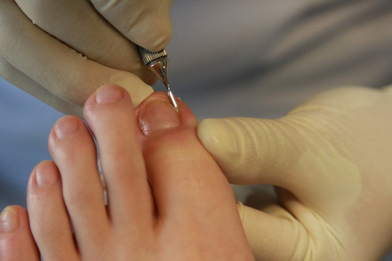

Quiene somos
Ana Morales es una podóloga altamente cualificada y especializada en el cuidado de pies y uñas, con una pasión inquebrantable por ayudar a sus pacientes a mantener una salud óptima en esta área crucial del cuerpo. Su negocio, Gold Adicct, refleja su dedicación a ofrecer servicios de calidad y cuidado personalizado a cada individuo que busca sus servicios.
Desde una edad temprana, Ana mostró un interés innato por la ciencia y el cuidado del cuerpo humano. Este interés la llevó a estudiar podología en una reconocida universidad, donde se sumergió en el mundo de la anatomía, fisiología y patología del pie y la uña. Durante sus años de estudio, Ana se destacó por su dedicación y habilidades excepcionales, lo que la llevó a recibir numerosos reconocimientos académicos y a graduarse con honores.
Tras completar su formación académica, Ana buscó especializarse aún más en el campo de la podología. Realizó estudios avanzados y cursos de especialización en diversas áreas, incluyendo dermatología podológica, biomecánica del pie, y técnicas avanzadas de tratamiento de uñas. Su compromiso con la excelencia profesional la llevó a obtener certificaciones adicionales y a participar en programas de formación continua para mantenerse al día con los últimos avances y técnicas en su campo.
La pasión de Ana por el cuidado del pie va más allá de sus estudios y formación profesional. Desde joven, ha sentido una profunda conexión con la importancia de mantener los pies sanos y bien cuidados. Reconoce que los pies son la base de nuestro cuerpo y que su salud puede afectar significativamente nuestra calidad de vida. Esta conciencia la motiva a educar a sus pacientes sobre la importancia del cuidado preventivo y a proporcionarles los recursos y tratamientos necesarios para mantener la salud de sus pies a lo largo de sus vidas.
El compromiso de Ana con el cuidado del pie se refleja en cada aspecto de su negocio, Gold Adicct. Desde el ambiente acogedor y relajante de su clínica hasta la atención personalizada que brinda a cada paciente, Ana se esfuerza por crear una experiencia que promueva el bienestar integral. Ella entiende que cada individuo es único y tiene necesidades específicas, por lo que se toma el tiempo necesario para escuchar y comprender las preocupaciones de sus pacientes antes de recomendar un plan de tratamiento personalizado.
En Gold Adicct, Ana ofrece una amplia gama de servicios diseñados para abordar una variedad de problemas podológicos, desde callos y juanetes hasta uñas encarnadas y hongos en las uñas. Utilizando técnicas avanzadas y equipos de última generación, ella trabaja para proporcionar soluciones efectivas y duraderas que mejoren la salud y el aspecto estético de los pies de sus pacientes.
Además de sus habilidades técnicas y conocimientos especializados, Ana es elogiada por su enfoque compasivo y su habilidad para establecer relaciones de confianza con sus pacientes. Ella comprende que hablar sobre problemas relacionados con los pies puede ser difícil para algunas personas, por lo que se esfuerza por crear un ambiente de apoyo y comprensión en su clínica. Su empatía y profesionalismo han ganado la confianza y el respeto de aquellos que buscan su ayuda.
Fuera de su práctica profesional, Ana se dedica a educar a la comunidad sobre la importancia del cuidado del pie y la prevención de problemas podológicos. Participa en eventos locales y charlas informativas donde comparte su experiencia y conocimientos con el público en general. Ella cree firmemente que la educación es clave para promover la salud y el bienestar, y se esfuerza por capacitar a las personas para que tomen decisiones informadas sobre su cuidado podológico.
En resumen, Ana Morales es mucho más que una podóloga especializada en pies y uñas. Es una profesional apasionada y comprometida con la salud y el bienestar de sus pacientes, que dedica su vida a proporcionar cuidados de calidad y atención personalizada a aquellos que confían en ella. Su negocio, Gold Adicct, es un testimonio de su dedicación a ayudar a otros a mantener una base sólida para una vida saludable y activa.
Fomulario